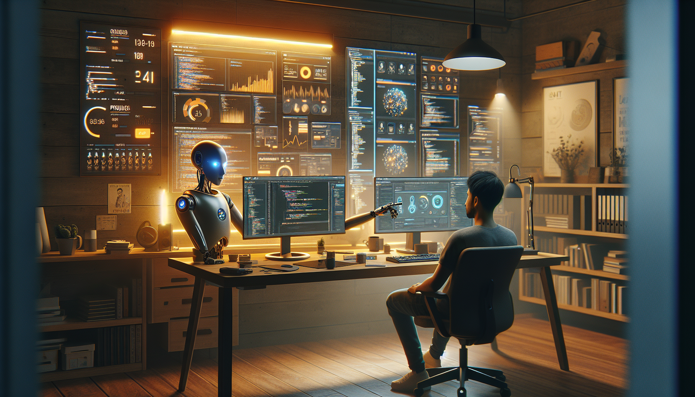

Indie development has always been about leverage. A single person, or a tiny team, tries to build something useful before time, cash, and attention run out. In 2025, AI has become the biggest leverage multiplier indie developers have ever had. It is not just a coding assistant anymore. It is a research tool, a design collaborator, a QA layer, a support agent, a growth assistant, and in some cases, the product itself.
That does not mean AI magically makes building a startup easy. It does change the constraints. The bottleneck is shifting away from raw implementation and toward judgment: choosing the right problem, defining scope, validating demand, and orchestrating a stack of AI tools without creating low-quality noise. The indie devs winning in 2025 are not the ones blindly automating everything. They are the ones using AI to compress execution time while keeping a strong grip on product taste, technical quality, and customer insight.
Here is how AI is changing indie dev in 2025, what is actually working in practice, and what developers should do differently now.
The most obvious shift is development speed. AI coding tools can now generate boilerplate, scaffold APIs, write tests, explain old code, refactor components, and produce first-pass documentation in seconds. For indie hackers, this means ideas move from concept to prototype much faster than they did even two years ago.
Tasks that used to take a weekend now often take an afternoon: setting up auth flows, creating CRUD dashboards, writing migration scripts, generating TypeScript types, or wiring a payment provider. This changes the economics of experimentation. Instead of protecting one idea because implementation is expensive, indie developers can test multiple ideas with less sunk cost.
But there is a catch. AI does not remove the need for engineering skill. It raises the value of product clarity. If your prompts are vague, your architecture is weak, or you do not know how to review generated code, you can ship bugs faster instead of shipping value faster. In 2025, one of the most important indie dev skills is prompt precision combined with code review discipline.
The result is a new kind of solo builder: someone who can operate with the output of a small team, as long as they know how to direct the tools.
One of the classic indie dev mistakes is spending months building before talking to users. AI lowers that risk because it makes pre-build validation much cheaper. You can now use AI to summarize communities, analyze competitor reviews, cluster customer pain points, generate landing page copy variations, and draft outreach messages tailored to a niche audience.
That does not replace real customer conversations, but it helps developers get to those conversations faster. Instead of manually reading hundreds of Reddit threads, App Store reviews, GitHub issues, or support comments, you can use AI to identify recurring complaints and opportunity gaps. This makes niche selection more data-informed.
In practical terms, indie devs in 2025 are using AI before they write much code at all. They are building smoke tests, fake-door landing pages, waitlists, and lightweight demos to measure intent. They are using AI to turn raw market noise into hypotheses.
The key advantage here is not just speed. It is confidence. AI helps reduce ambiguity early, so the first version of a product is more likely to target a real pain point instead of a guessed one.
Historically, many technical founders could build functional products but struggled to make them look polished or communicate value clearly. AI is changing that. In 2025, indie developers can generate UI drafts, improve onboarding copy, create product illustrations, draft help docs, and produce marketing assets without hiring a full creative team on day one.
This matters because user expectations are higher now. A rough MVP may still work in some niches, but users increasingly expect clear UX, decent visual consistency, and fast answers. AI helps solo builders close that gap.
For example, a developer can:
The best indie products still need taste. AI can generate options, but it cannot fully define what feels trustworthy, elegant, or differentiated. That is why the strongest builders use AI as a creative accelerator, not as a replacement for product judgment.
Another major shift is operational leverage. Support used to become painful as soon as a side project got traction. Now indie devs can use AI to classify tickets, suggest replies, search docs, summarize bug reports, and handle common support requests automatically. For a one-person business, this is a huge advantage.
AI also helps with internal operations that used to be ignored until they became urgent. It can summarize user feedback, turn support threads into roadmap themes, draft release notes, monitor logs for anomalies, and generate weekly business summaries from analytics data.
This does not mean every support workflow should be fully automated. In fact, over-automation is one of the fastest ways to frustrate early users. But a well-designed AI layer can remove repetitive workload while keeping important conversations human.
For indie devs, that means more time spent on product improvement and less time buried in inboxes, dashboards, and recurring admin work.
Great products still fail without distribution. AI is changing this part of the game too. In 2025, indie developers can create more content, in more formats, with less effort: blog posts, tutorials, changelogs, launch threads, docs, comparison pages, and email sequences. That lowers the barrier to consistent marketing.
SEO is especially interesting here. AI makes it easier to research keywords, build content outlines, refresh older pages, and identify long-tail opportunities. For technical products, this is powerful because developers can turn what they are already building into discoverable content. A feature implementation can become a tutorial. A bug fix can become a troubleshooting article. A product decision can become a founder memo.
Still, content quantity alone is not enough. The web is increasingly flooded with generic AI-generated material. The content that performs best tends to have one or more of these qualities:
In other words, AI helps with throughput, but authenticity and expertise are still the differentiators.
AI is not only changing how indie devs work. It is also creating new products worth building. Entire categories that once required large teams can now be tackled by small operators: AI copilots for niche workflows, autonomous agents for repetitive business tasks, vertical knowledge tools, internal ops assistants, and workflow automation products tailored to specific industries.
This is where 2025 gets especially interesting. The best opportunities are often not general-purpose AI apps. They are focused products built for a clear user with a painful workflow. A generic writing assistant is hard to differentiate. An AI tool that helps freight brokers summarize carrier emails, or helps recruiters screen inbound applications against custom role criteria, is much more compelling.
For indie developers, this creates a practical playbook:
Many of the strongest AI-native indie products are not flashy. They quietly save users hours every week.
There is a less comfortable truth in all of this: if AI helps you build faster, it helps everyone else build faster too. That means more competitors, more cloned ideas, more noise, and shorter windows of novelty. A decent product that would have stood out in 2021 may feel replaceable in 2025.
This is why execution speed alone is no longer enough. Durable advantage increasingly comes from distribution, trust, domain expertise, proprietary data, community, and relentless iteration. AI compresses the cost of building software, so software itself becomes less defensible unless it is tied to something harder to copy.
For indie devs, the practical takeaway is simple: do not just build features. Build moats around insight, audience, workflow depth, and customer relationships. The winners are often the developers who stay closest to users and keep shipping improvements week after week.
AI is changing indie dev in 2025 by making small teams dramatically more capable. It speeds up coding, reduces validation cost, improves design and content workflows, automates support and operations, and opens the door to entirely new software categories. For developers, this is a real opportunity. The cost of turning an idea into a testable product has dropped. The reach of a solo builder has expanded.
But AI does not remove the need for fundamentals. It makes fundamentals more important. Clear problem selection, strong product sense, careful technical review, and close contact with users are what turn AI leverage into a real business. The indie devs who thrive in 2025 will not be the ones using the most AI. They will be the ones using it with the most intention.
If you are building right now, this is the moment to move. The tooling is good enough, the opportunities are real, and the gap between idea and execution has never been smaller.
Follow along as we build OpenClaw — an autonomous AI agent — in public on GitHub.